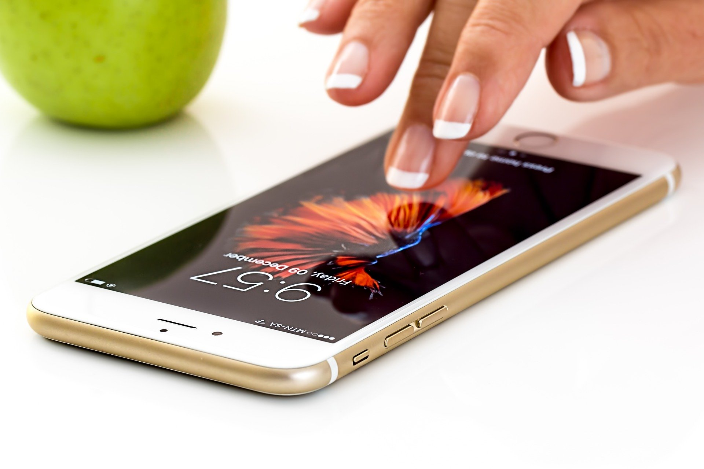

Mladostniki so v današnjem času močno vpeti v virtualni svet, kar moramo sprejeti. So generacija, ki je odraščala z mobilnimi telefoni, kar lahko pri pouku obrnemo sebi v prid. Eden izmed možnih pristopov je izobraževanje s pomočjo mobilnih izobraževalnih iger. Gre za igre pri katerih s skupinskim sodelovanjem opravijo določene naloge, ki jih pripravi učitelj, naloga učitelja pa je, da jih med celotnim procesom vodi in komunicira z njimi. Takšne igre učencem omogočajo tudi razvoj njihove kreativnosti, kar pa je izrednega pomena za nadaljno življenje (Papić, M., Kikec, T., 2009).
Mobilni telefoni nudijo številne izobraževalne aplikacije, ki naj bi bile po raziskavah uporabne tudi za učitelje, saj lahko učni proces bolje organizirajo in se tudi sami izobražujejo. Te aplikacije so prvenstveno namenjene samoizobraževanju (Rašl, A., 2019).
Poleg tega pa imajo telefoni še veliko funkcij, ki lahko pouk naredijo zanimivejši. S telefoni lahko učenci dostopajo do virov na spletu, lahko fotografirajo, urejajo fotografije, snemajo poskuse pri pouku biologije ali naravoslovja, izdelujejo in poslušajo glasovne posnetke, rišejo grafe, si pomagajo pri navigaciji in orientaciji v naravi in še bi lahko naštevali. Skratka telefoni nam omogočajo nešteto funkcij in aplikacij, ki jih lahko vključimo v pouk (Mobilni telefoni in pouk, b. p.).
